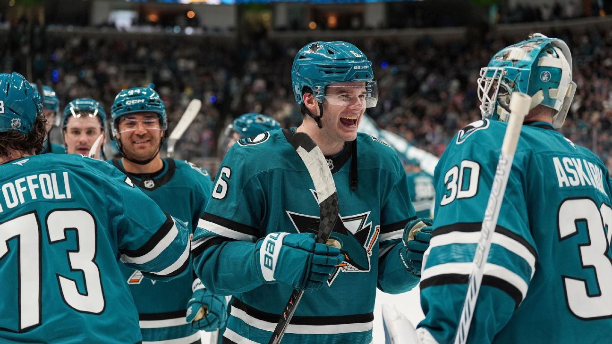

Таблица лиг NHL: На какое место закончит команда «Шаркс»?

Северо-Тихоокеанская дивизия оказалась самой сложной для прогнозирования в отношении плей-офф Stanley Cup 2026 года.
Когда игра начинается во вторник, «Анахайм Дайникс» лидируют, набрав 77 очков в 67 играх, за ними следуют «Вегас Голден Найтс» (76 очков в 67 играх) и «Эдмонтон Ойлерз» (75 очков в 68 играх). Эти команды постоянно меняли позиции на протяжении всего сезона, и аналогичная ситуация наблюдается и у трех команд, находящихся позади: «Сиэтл Кракен» занимают второе место в списке претендентов, набрав 71 очко в 66 играх, а «Лос-Анджелес Кингз» (71 очко в 67 играх) и «Сан-Хосе Шаркс» (70 очков в 65 играх) сражаются за это место.
Рекомендации редакции

## Брент Бернс возглавляет список кандидатов на участие в плей-офф Stanley Cup 2026 года Арда Окал
* 
## Рейтинги NHL: Выбор для каждой команды в плей-офф по фэнтези-хоккею Шон Аллен и Виктория Матияш
* 
## «Аваланч» теперь непобедимы? Основные претенденты на Востоке совершили серьезные ошибки? Анализ реакций на торги в NHL Грег Уишкински
2 Связанные
Прогнозы от Stathletes показывают, что «Голден Найтс» и «Дакс» завершат сезон с 96 очками, за ними следуют «Ойлерз» (91,6 очков) и «Шаркс» (87,9 очков). Учитывая, что «Шаркс» не выходят в плей-офф с 2018-19, любая возможность попасть в плей-офф – это хорошее изменение.
Конечно, получение второго места в плей-офф означает игру в первом раунде против «Колорадо Авалоanches» или «Даллас Старз» – «Шаркс» выиграли и проиграли обеим командам. Смогут ли «Шаркс» занять одно из более высоких мест в Тихоокеанской дивизии?
Эта игра продолжается во вторник с игрой против «Ойлерз» (21:00 ET, ESPN+). «Шаркс» выиграли и проиграли в овертайме «Ойлерз», а также запланирована еще одна игра 8 апреля. Эти игры, приносящие «четыре очка», очень важны, и у них еще две такие игры против «Дакс».
Помимо игр против «Ойлерз» и «Дакс», «Шаркс» сыграют еще 13 игр в этом сезоне, причем только одна команда, которая сейчас в плей-офф: «Баффало Сабрэз» в четверг.
Таким образом, хотя «Сан Хозе» начинает этот заключительный отрезок сезона на 5-7 очков отставать от своих соперников в дивизионе, возможность обогнать все эти команды вполне реальна, учитывая их оставшийся график.
Каждая команда имеет около 15 игр до окончания регулярного сезона 16 апреля, и мы поможем вам следить за всем этим здесь, в ежедневном отслеживании плей-офф НХЛ. По мере того, как мы будем проникать в заключительный этап, мы предоставим подробную информацию обо всех гонках за плей-офф – а также о командах, которые борются за позиции в драфте НХЛ 2026 года.
Примечание: Шансы на плей-офф – от Stathletes.
Перейти к:
Текущие матчи плей-офф
Расписание на сегодня
Результаты вчерашнего дня
Расширенная таблица
Борьба за 1-е место
Текущие матчи плей-офф
Восточная конференция
A1 «Баффало Сэйбрс» против WC1 «Детройт Рокетс»
A2 «Тампа-Бэй Лайтнинг» против A3 «Монреаль Канадиенс»
M1 «Каролина Харрикейнс» против WC2 «Бостон Брюинс»
M2 «Питтсбург Пеннинз» против M3 «Нью-Йорк Айлендс»
Западная конференция
C1 «Колорадо Авалош» против WC2 «Сиэтл Кракен»
C2 «Даллас Старз» против C3 «Миннесота Уайлд»
P1 «Анахайм Дакотс» против WC1 «Юта Мамф»
P2 «Вегас Голден Найтс» против P3 «Эдмонтон Ойлерз»
Матчи вторника
Примечание: Все время – по восточному времени. Все матчи, которые не транслируются на TNT или NHL Network, доступны для просмотра на ESPN+ (применимы ограничения по местным трансляциям).
Все от ESPN. Все в одном месте.
Смотрите свои любимые события в обновленном приложении ESPN. Узнайте больше о том, какой план подходит именно вам. Зарегистрироваться сейчас
New York Islanders против Toronto Maple Leafs, 19:00
Boston Bruins против Montreal Canadiens, 19:00
Carolina Hurricanes против Columbus Blue Jackets, 19:00
Minnesota Wild против Chicago Blackhawks, 19:30 (TNT)
Nashville Predators против Winnipeg Jets, 20:00
San Jose Sharks против Edmonton Oilers, 21:00
Florida Panthers против Vancouver Canucks, 22:00
Buffalo Sabres против Vegas Golden Knights, 22:00
Tampa Bay Lightning против Seattle Kraken, 22:00 (TNT)
Результаты матчей в понедельник
Detroit Red Wings 5, Calgary Flames 2
New Jersey Devils 4, Boston Bruins 3 (Прев. время)
Los Angeles Kings 4, New York Rangers 1
Utah Mammoth 6, Dallas Stars 3
Pittsburgh Penguins 7, Colorado Avalanche 2
Расширенная таблица
Атлантическая дивизия

Buffalo Sabres
Очки: 88
Победы в основное время: 34
Позиция в плей-офф: A1
Осталось игр: 15
Темп набора очков: 107.7
Следующий матч: @ VGK (Вторник)
Шансы на плей-офф: 99.8%
Трагическое число: N/A

Tampa Bay Lightning
Очки: 84
Победы в основное время: 31
Позиция в плей-офф: A2
Осталось игр: 17
Темп набора очков: 106.0
Следующий матч: @ SEA (Вторник)
Шансы на плей-офф: 99.6%
Трагическое число: N/A

Montreal Canadiens
Очки: 82
Победы в регулярном сезоне: 25
Позиция в плей-офф: A3
Оставшиеся игры: 16
Темп набора очков: 101.9
Следующая игра: против BOS (вторник)
Шансы на плей-офф: 93.5%
Трагическое число: N/A

Детройт «Рэдингс»
Очки: 82
Победы в регулярном сезоне: 26
Позиция в плей-офф: WC1
Оставшиеся игры: 14
Темп набора очков: 98.9
Следующая игра: против MTL (четверг)
Шансы на плей-офф: 27%
Трагическое число: N/A

Бостон «Брюинс»
Очки: 81
Победы в регулярном сезоне: 27
Позиция в плей-офф: WC2
Оставшиеся игры: 15
Темп набора очков: 99.1
Следующая игра: против MTL (вторник)
Шансы на плей-офф: 73.2%
Трагическое число: N/A

Оттава «Сенс»
Очки: 77
Победы в регулярном сезоне: 28
Позиция в плей-офф: N/A
Оставшиеся игры: 16
Темп набора очков: 95.7
Следующая игра: против WSH (среда)
Шансы на плей-офф: 65.2%
Трагическое число: 28

Торонто «Мэпл Лифс»
Очки: 70
Победы в регулярном сезоне: 21
Позиция в плей-офф: N/A
Оставшиеся игры: 14
Темп набора очков: 84.4
Следующая игра: против NYI (вторник)
Шансы на плей-офф: 0.1%
Трагическое число: 17

Florida Panthers
Очки: 69
Победы в основное время: 26
Позиция в плей-офф: N/A
Оставшиеся игры: 16
Темп набора очков: 85.7
Следующая игра: @ VAN (Вторник)
Шансы на плей-офф: 0.1%
Трагическое число: 20
Metro Division

Carolina Hurricanes
Очки: 90
Победы в основное время: 31
Позиция в плей-офф: M1
Оставшиеся игры: 16
Темп набора очков: 111.8
Следующая игра: @ CBJ (Вторник)
Шансы на плей-офф: 99.9%
Трагическое число: N/A

Pittsburgh Penguins
Очки: 83
Победы в основное время: 29
Позиция в плей-офф: M2
Оставшиеся игры: 15
Темп набора очков: 101.6
Следующая игра: @ CAR (Среда)
Шансы на плей-офф: 81.5%
Трагическое число: N/A

New York Islanders
Очки: 81
Победы в основное время: 24
Позиция в плей-офф: M3
Оставшиеся игры: 15
Темп набора очков: 99.1
Следующая игра: @ TOR (Вторник)
Шансы на плей-офф: 68.8%
Трагическое число: N/A

Columbus Blue Jackets
Очки: 79
Победы в основное время: 23
Позиция в плей-офф: N/A
Оставшиеся игры: 16
Темп набора очков: 98.2
Следующая игра: vs. CAR (Вторник)
Шансы на плей-офф: 77.2%
Трагическое число: 30

Филадельфия «Флайерс»
Очки: 74
Победы в регулярном сезоне: 20
Позиция в плей-офф: N/A
Оставшиеся игры: 16
Темп набора очков: 91.9
Следующая игра: @ ANA (среда)
Шансы на плей-офф: 7%
Трагическое число: 25

Вашингтон «Капиталс»
Очки: 74
Победы в регулярном сезоне: 28
Позиция в плей-офф: N/A
Оставшиеся игры: 14
Темп набора очков: 89.2
Следующая игра: vs. OTT (среда)
Шансы на плей-офф: 6.3%
Трагическое число: 21

Нью-Джерси «Девилз»
Очки: 70
Победы в регулярном сезоне: 22
Позиция в плей-офф: N/A
Оставшиеся игры: 15
Темп набора очков: 85.7
Следующая игра: @ NYR (среда)
Шансы на плей-офф: 1%
Трагическое число: 19

Нью-Йорк «Рейнджерс»
Очки: 64
Победы в регулярном сезоне: 19
Позиция в плей-офф: N/A
Оставшиеся игры: 15
Темп набора очков: 78.3
Следующая игра: vs. NJ (среда)
Шансы на плей-офф: 0.1%
Трагическое число: 13
Центральная дивизия

Колорадо «Аваланч»
Очки: 97
Победы в регулярном сезоне: 39
Позиция в плей-офф: C1
Оставшиеся игры: 16
Темп набора очков: 120.5
Следующая игра: против DAL (среда)
Шансы на плей-офф: 99.9%
Трагическое число: N/A

Dallas Stars
Очки: 94
Победы в регулярном сезоне: 33
Позиция в плей-офф: C2
Оставшиеся игры: 15
Темп набора очков: 115.1
Следующая игра: против COL (среда)
Шансы на плей-офф: 99.9%
Трагическое число: N/A

Minnesota Wild
Очки: 88
Победы в регулярном сезоне: 25
Позиция в плей-офф: C3
Оставшиеся игры: 14
Темп набора очков: 106.1
Следующая игра: против CHI (вторник)
Шансы на плей-офф: 99.9%
Трагическое число: N/A

Utah Mammoth
Очки: 76
Победы в регулярном сезоне: 27
Позиция в плей-офф: WC1
Оставшиеся игры: 14
Темп набора очков: 91.7
Следующая игра: против VGK (четверг)
Шансы на плей-офф: 96.6%
Трагическое число: N/A

Nashville Predators
Очки: 67
Победы в регулярном сезоне: 22
Позиция в плей-офф: N/A
Оставшиеся игры: 16
Темп набора очков: 83.2
Следующая игра: против WPG (вторник)
Шансы на плей-офф: 3.3%
Трагическое число: 28

Виннипег «Джетс»
Очки: 66
Победы в основное время: 23
Позиция в плей-офф: N/A
Оставшиеся игры: 16
Темп набора очков: 82
Следующая игра: против NSH (вторник)
Шансы на плей-офф: 1,7%
Трагическое число: 27

Сент-Луис «Блюз»
Очки: 64
Победы в основное время: 24
Позиция в плей-офф: N/A
Оставшиеся игры: 15
Темп набора очков: 78,3
Следующая игра: против CGY (среда)
Шансы на плей-офф: 0,8%
Трагическое число: 23

Чикаго «Хакс»
Очки: 61
Победы в основное время: 18
Позиция в плей-офф: N/A
Оставшиеся игры: 16
Темп набора очков: 75,8
Следующая игра: против MIN (вторник)
Шансы на плей-офф: 0,5%
Трагическое число: 22
Тихоокеанский дивизион

Анахайм «Дакс»
Очки: 77
Победы в основное время: 22
Позиция в плей-офф: P1
Оставшиеся игры: 15
Темп набора очков: 94,2
Следующая игра: против PHI (среда)
Шансы на плей-офф: 99,6%
Трагическое число: N/A

«Вегас Голдънс»
Очки: 76
Победы в основное время: 23
Позиция в плей-офф: P2
Оставшиеся игры: 15
Темп набора очков: 93,0
Следующая игра: против BUF (вторник)
Шансы на плей-офф: 96,4%
Трагическое число: N/A

Эдмонтон «Ойлерз»
Очки: 75
Победы в регулярном сезоне: 25
Позиция в плей-офф: 3-я
Оставшиеся игры: 14
Темп набора очков: 90,4
Следующая игра: против SJ (вторник)
Шансы на плей-офф: 86,1%
Трагическое число: N/A

Сиэтл «Кракена»
Очки: 71
Победы в регулярном сезоне: 25
Позиция в плей-офф: 2-я
Оставшиеся игры: 16
Темп набора очков: 88,2
Следующая игра: против TB (вторник)
Шансы на плей-офф: 32,3%
Трагическое число: N/A

Лос-Анджелес «Кингз»
Очки: 71
Победы в регулярном сезоне: 18
Позиция в плей-офф: N/A
Оставшиеся игры: 15
Темп набора очков: 86,9
Следующая игра: против PHI (четверг)
Шансы на плей-офф: 18,1%
Трагическое число: 30

Сан-Хосе «Шаркс»
Очки: 70
Победы в регулярном сезоне: 20
Позиция в плей-офф: N/A
Оставшиеся игры: 17
Темп набора очков: 88,3
Следующая игра: против EDM (вторник)
Шансы на плей-офф: 64,7%
Трагическое число: 33

Калгари «Флеймс»
Очки: 59
Победы в регулярном сезоне: 22
Позиция в плей-офф: N/A
Оставшиеся игры: 15
Темп набора очков: 72.2
Следующая игра: против STL (среда)
Шансы на плей-офф: 0.1%
Трагическое число: 18

Ванкувер Канакс
Очки: 48
Победы в регулярном сезоне: 13
Позиция в плей-офф: N/A
Оставшиеся игры: 16
Темп набора очков: 59.6
Следующая игра: против FLA (вторник)
Шансы на плей-офф: ~0%
Трагическое число: 9
Гонка за 1-м номером
NHL использует лотерею для определения порядка первого раунда драфта, поэтому команда, занявшая последнее место, не гарантирует себе 1-й выбор. По состоянию на 2021 год, команда может подняться на максимум 10 позиций, если выиграет лотерею, поэтому только 11 команд имеют право участвовать в розыгрыше 1-го номера. Полная информация о процессе можно найти здесь. На вершине рейтингов для этого лета — Гавин МакКенна, нападающий из Пенсильванского университета.
1. Ванкувер Канакс
Очки: 48
Победы в регулярном сезоне: 13
2. Калгари Флеймс
Очки: 59
Победы в регулярном сезоне: 22
3. Чикаго Блэкхокс
Очки: 61
Победы в основное время: 18
4. Нью-Йорк Рейнджерс
Очки: 64
Победы в основное время: 19
5. Сент-Луис Блюз
Очки: 64
Победы в основное время: 24
6. Виннипег Джаتس
Очки: 66
Победы в основное время: 23
7. Нашвилль Предедс
Очки: 67
Победы в основное время: 22
8. Флорида Пантерс
Очки: 69
Победы в основное время: 26
9. Торонто Мэйпле Лифс*
Очки: 70
Победы в основное время: 21
10. Нью-Джерси Девилз
Очки: 70
Победы в основное время: 22
11. Сан-Хосе Шаркс
Очки: 70
Победы в основное время: 20
12. Лос-Анджелес Кингс
Очки: 71
Победы в основное время: 18
13. Вашингтон Капиталс
Очки: 74
Победы в основное время: 28
14. Филадельфия «Флайерс»
Очки: 74
Победы в основное время: 20
15. Оттава «Сенс»
Очки: 77
Победы в основное время: 28
16. «Колумбус Блю Джекетс»
Очки: 79
Победы в основное время: 23
*Примечание: Выбор «Мэпл Лифс» принадлежит «Брюинс», если он не попадет в топ-5.